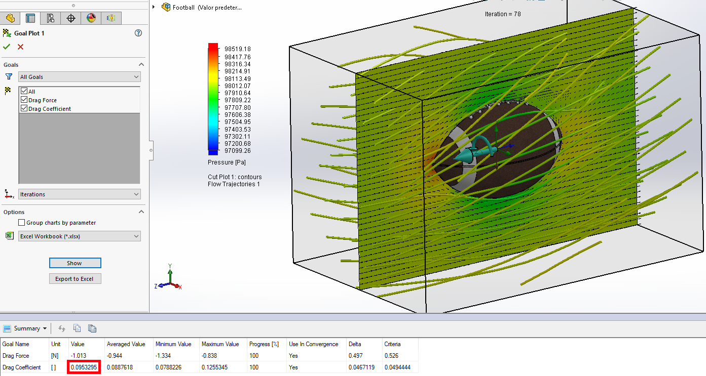
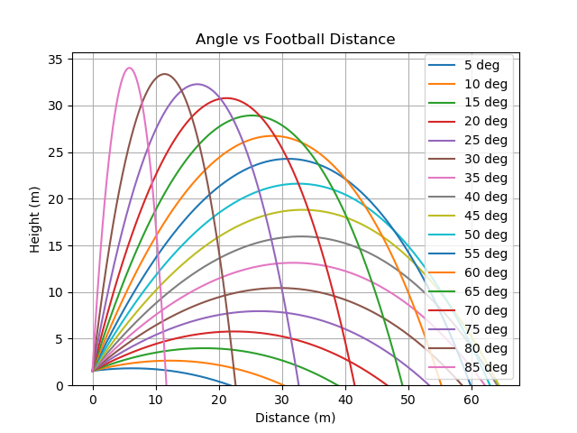
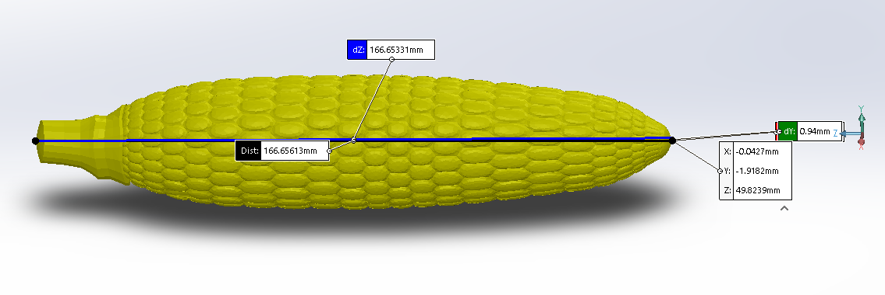
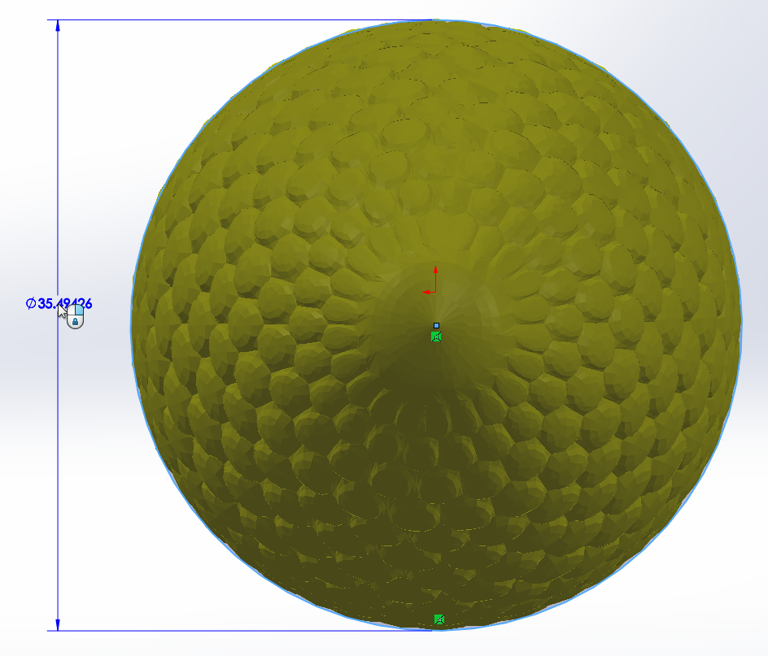
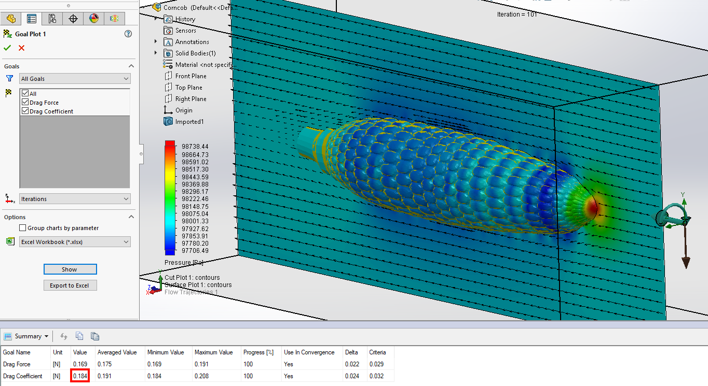
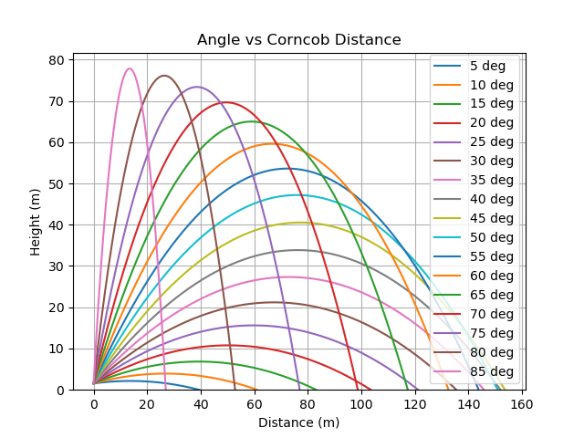

Feasibility of Using a Corncob as a Football

Table of Contents
Background
I had written this a while ago to be a humorous post on /r/CFB, but due to COVID-19, I totally forgot to post it. This is not meant to be serious. Enjoy.
Football Reference
To begin with, we need to gather actual data from real footballs. This is to help with our calculations for corncobs, and to provide as a reference to ensure our process is correct.
Size and Mass
First, we need the mass and frontal area of a football. I don’t know if college footballs are different from NFL footballs, but I was able to find that a NFL football should be between 14 to 15 ounces in weight and have a circumference of 22 inches. Source. We’ll meet the weight half-way and call it 14.5 ounces or 0.41 kg. With a circumference of 22 inches, that means (assuming the football front is perfectly circular) the frontal area is 38.52 in2 or 0.0248 m2.
Throwing Velocity
So, how fast can a quarterback actually throw a football? More importantly, how much force can a quarterback impart on a football? (you’ll see why later) Based on some research, a fast throw is around 60 mph (26.82 m/s) with a rotation of about 600 rpm (62.83 rad/s). Source. However, that still doesn’t provide us the force of the throw, as force equals mass times acceleration. In order to figure out acceleration, we need to know how long the throw takes. Using this clip, I counted the throw taking 11 frames, from winding back, to the ball leaving Drew’s hand. In that 30fps video, that’s 0.36 seconds, which means the ball experienced about 74.5 m/s2 of acceleration. This means that about 30.545 Newtons of force was imparted onto the ball.
Throwing Height
Another important factor is at what height the football is thrown from. Someone taller will be able to throw the ball farther. I don’t know much about football, but it seems that when throwing the football, it’s released around head-height, so we’ll estimate it as that. Therefore, we need an idea of idea of how tall our average quarterback is. Thankfully, a quick search reveals that to be around 6’1” or about 1.55 meters. Source.
Air Properties
Next, we need to figure out the properties of air (density, temperature, pressure) that footballs are being thrown in, as this affects the drag and trajectory. While we could just assume sea-level, let’s find the average altitude of every college football stadium, and use a standard atmosphere lookup table to find the air properties.
Unfortunately, I was unable to find a list of altitudes of college football stadiums. Instead, I had to get creative. I did manage to find a list of every college football stadium. Source. From there, I wrote a script that ran each stadium through the Google Maps API to get an elevation. Source. Just average all the values together, and ta-da, the average elevation of every US college football stadium is around 285 meters.
With the average elevation, we can now determine the standard air density. This comes out to:
- Density: 1.19183 kg/m3
- Temperature: 286.297 K
- Pressure: 97947.8 Pa
Coefficient of Drag
A crucial number in determining the trajectory of a flying object is it’s “coefficient of drag”. This is a unitless coefficient that represents how much drag an object experiences. This is a very difficult number to calculate, and is usually found experimentally.
Research shows that the coefficient of drag of a football is around 0.05-0.06. Source. However, to ensure our process is correct, I’d like to replicate this result with CFD (computational fluid dynamics) software.
3D Model
In order to compute our own coefficient of drag, we need a 3D model. Thankfully a quick search on GrabCAD found the perfect candidate. This model was hollow, so to avoid any weird effects in CFD, I filled in the model.
CFD
I setup a fluid simulation in SOLIDWORKS (my CAD program of choice), with the following parameters, and an equation goal to compute the drag coefficient from the drag force imparted on the football. Source.
Parameters:
- External Analysis
- Exclude cavities without flow conditions
- Exclude internal space
- Gravity on
- Global rotation @ 62.83 rad/s
- Air preset
- Laminar and turbulent flow
- Humidity effects on (default settings)
- Turbulence effects on (default settings)
- Adiabatic wall with 100 micrometer roughness
- 97947.8 Pa pressure
- 286.297 K temperature
- -26.82 m/s flow velocity relative to rotating frame
- Level 6 density global mesh
- Computational Domain +/- 0.2 m on sides, +/- 0.3 m front-to-back.
After it was done, I was pleasantly surprised to find my coefficient of drag to come out to 0.0953. This means we’re in the right ballpark. (I didn’t expect to hit the value exactly as CFD inherently has some error, and SOLIDWORKS flow simulation isn’t a top-tier product)

Reference Calculations
Finally, with all of this data, we can now plot theoretical trajectories. Source.

Thrown at 5 degrees, a football will fly for 0.85 seconds, landing 21.85 meters downfield.
Thrown at 10 degrees, a football will fly for 1.21 seconds, landing 30.28 meters downfield.
Thrown at 15 degrees, a football will fly for 1.6 seconds, landing 38.85 meters downfield.
Thrown at 20 degrees, a football will fly for 2.01 seconds, landing 46.67 meters downfield.
Thrown at 25 degrees, a football will fly for 2.41 seconds, landing 53.32 meters downfield.
Thrown at 30 degrees, a football will fly for 2.79 seconds, landing 58.52 meters downfield.
Thrown at 35 degrees, a football will fly for 3.15 seconds, landing 62.14 meters downfield.
Thrown at 40 degrees, a football will fly for 3.49 seconds, landing 64.08 meters downfield.
Thrown at 45 degrees, a football will fly for 3.8 seconds, landing 64.34 meters downfield.
Thrown at 50 degrees, a football will fly for 4.07 seconds, landing 62.93 meters downfield.
Thrown at 55 degrees, a football will fly for 4.32 seconds, landing 59.87 meters downfield.
Thrown at 60 degrees, a football will fly for 4.53 seconds, landing 55.23 meters downfield.
Thrown at 65 degrees, a football will fly for 4.72 seconds, landing 49.07 meters downfield.
Thrown at 70 degrees, a football will fly for 4.86 seconds, landing 41.51 meters downfield.
Thrown at 75 degrees, a football will fly for 4.98 seconds, landing 32.66 meters downfield.
Thrown at 80 degrees, a football will fly for 5.06 seconds, landing 22.66 meters downfield.
Thrown at 85 degrees, a football will fly for 5.11 seconds, landing 11.71 meters downfield.Thrown at an optimal 45 degrees, our theoretical football calculations say the ball will fly about 64 meters. Based on record throw data from this site it looks like our data is pretty feasible, though maybe a bit on the short side.
Corncob
Time to perform the same analysis with a corncob.
Size and Mass
Once again, we first need the size and mass of a corncob. Research shows that the average ear of corn was between 156.80 mm and 178.13 mm in length, depending on when it was picked. Source. (I know this research is from Africa. It’s best I could come up with without going to the grocery store with a ruler looking like an idiot.)
Finding the mass of an average corncob was a bit trickier. I was able to find that a pound of corn is about 1300 kernels, and that an ear of corn averages 800 kernels. This means that we can estimate that an ear of corn is about 0.615 pounds or 0.279kg. Source.
Throwing Velocity
So, how fast can you throw a corncob? Given that the corncob has a mass of only 0.279 kg, this means with 30.545 Newtons of force, the corncob can be accelerated at a rate of 109.48 m/s2. Over the same 0.36 second period, that’s 39.413 m/s or a little over 88 mph (where we’re going, we don’t need roads).
Coefficient of Drag
3D Model
I didn’t have any desire to 3D model an ear of corn, so I went looking for a model I could download for free. Surprisingly, there weren’t many options. Thankfully, I did manage to find one free model. A quick measurement shows the length of the model falls within our acceptable range, so no scaling required.

In order to get the frontal area of our selected corncob, I simply measured the diameter of the model, which happened to be a near-perfect circle with a diameter of 35.49 mm.

This gives the corncob a frontal area of 989.24 mm2 or 0.00098924 m2.
CFD
I setup a very similar simulation as described above, just with a higher velocity and smoother walls. I then fired off the simulation and let my processor chug for about 20 minutes. This simulation took significantly longer as the model was not a native SOLIDWORKS file, but a very complex imported geometry. Meshing the model alone took about 5 minutes.
After the simulation was finished, I was very surprised to have the coefficient of drag come out to 0.184 (almost twice that of the football). My best guess for this is despite the corncob’s small size, the higher velocity and rougher surface contributed to more relative drag. Another theory I have is that the kernels protruding create a lot of low-pressure areas, increasing drag, as you can see in the image below with the sort of “ripples” of pressure values.

Throwing Distance
Now, we bring it all together. How far can you actually throw a corncob? I plotted theoretical trajectories using the same math as before.

Thrown at 5 degrees, a corncob will fly for 1.01 seconds, landing 39.47 meters downfield.
Thrown at 10 degrees, a corncob will fly for 1.59 seconds, landing 61.1 meters downfield.
Thrown at 15 degrees, a corncob will fly for 2.22 seconds, landing 83.16 meters downfield.
Thrown at 20 degrees, a corncob will fly for 2.85 seconds, landing 103.55 meters downfield.
Thrown at 25 degrees, a corncob will fly for 3.48 seconds, landing 121.23 meters downfield.
Thrown at 30 degrees, a corncob will fly for 4.08 seconds, landing 135.46 meters downfield.
Thrown at 35 degrees, a corncob will fly for 4.65 seconds, landing 145.79 meters downfield.
Thrown at 40 degrees, a corncob will fly for 5.18 seconds, landing 151.91 meters downfield.
Thrown at 45 degrees, a corncob will fly for 5.68 seconds, landing 153.62 meters downfield.
Thrown at 50 degrees, a corncob will fly for 6.14 seconds, landing 150.89 meters downfield.
Thrown at 55 degrees, a corncob will fly for 6.54 seconds, landing 143.8 meters downfield.
Thrown at 60 degrees, a corncob will fly for 6.9 seconds, landing 132.5 meters downfield.
Thrown at 65 degrees, a corncob will fly for 7.21 seconds, landing 117.33 meters downfield.
Thrown at 70 degrees, a corncob will fly for 7.46 seconds, landing 98.65 meters downfield.
Thrown at 75 degrees, a corncob will fly for 7.66 seconds, landing 76.97 meters downfield.
Thrown at 80 degrees, a corncob will fly for 7.8 seconds, landing 52.84 meters downfield.
Thrown at 85 degrees, a corncob will fly for 7.89 seconds, landing 26.95 meters downfield.These results are very promising. At an optimal 45 degree angle, a good throw could chuck a corncob over 150 meters, 138.76% farther! And our analysis has tended to be a bit conservative, so the actual results may even be better!
Catching Feasibility
An important question you may be wondering is “How feasible is it to actually catch a corncob flying at you?” Well, as an engineering student, I can’t catch a regular football to save my life. I was also unable to convince any of my friends to stand in a field and let me throw corncobs at them, and I doubt I could catch any 80 mph corncobs thrown at me. Therefore, I’ll consider this as “equivalent”.
Economic Considerations
Trying to estimate how many corncobs will be needed is a difficult task (since I’m assuming the corncobs won’t survive more than one throw). I’ll try to get a rough estimate with some Fermi estimation (basically, make wild estimations and hope we land in the right order of magnitude).
Let’s say there’s about 500 college football teams in the United States. Each team plays about 12 games every season. In each game, about 40 passes are attempted. Source. Just actual games comes out to shy of a quarter million corncobs. Accounting for practice is pretty difficult, so let’s just make a wild guess that for every attempted pass in a game, 100 were practiced (probably a bit conservative). So our total comes out to 24 million corncobs needed annually.
Iowa produces 2.7 billion bushels of corn each year on 13.5 million acres. However, only 3400 acres is used for sweet corn. At 56 pounds per bushel, and corncobs weighing about 0.615 pounds each, that’s about 62 million corncobs annually. Source.
So while Iowa annual corn production could probably cope, and extra 39% percent in growing capacity would really be needed. Considering five dozen ears of sweet corn costs about $4.00, this would be around a million and a half dollar stimulus to the Iowa corn economy. Source.
Conclusion
Pros:
- Longer passes
- More Hail Mary’s
- More environmentally friendly
- Economic stimulus
- Delicious
- No “deflategate” scandals
Cons:
- None
Overall, analysis has shown that corncobs replacing footballs is an incredible idea and should be considered by the NCAA.
References
- https://www.sportsrec.com/6560043/what-is-the-official-size-of-the-nfl-football
- https://www.sportsrec.com/6938474/maximum-speed-of-a-football
- https://youtu.be/tVoqA-LKGb4?t=206
- https://www.ncsasports.org/football/recruiting-guidelines
- http://www.collegegridirons.com/comparisons.htm
- https://developers.google.com/maps/documentation/elevation/start
- https://www.digitaldutch.com/atmoscalc/
- http://users.df.uba.ar/sgil/physics_paper_doc/papers_phys/fluids/drag_football.pdf
- https://grabcad.com/library/american-football-5
- https://www.grc.nasa.gov/WWW/K-12/airplane/dragco.html
- https://www.grc.nasa.gov/www/k-12/airplane/flteqs.html
- https://www.topendsports.com/sport/gridiron/longest-throw.htm
- https://www.researchgate.net/publication/303010127_Azospirillum_brasilense_promotes_increment_in_corn_production
- https://www.nefbfoundation.org/Images/FOUndation/Educators/Enriching-Activities/Corn-Calculations.pdf
- https://free3d.com/3d-model/cornoncob-v01–775846.html
- https://en.wikipedia.org/wiki/Fermi_problem
- https://www.teamrankings.com/nfl/stat/pass-attempts-per-game
- https://www.iowacorn.org/education/faqs
- https://www.agmrc.org/media/cms/budgetsheets_sweetcorn2FINAL_697315E3311E0.pdf
This is not meant to be a serious engineering analysis. This is purely for entertainment purposes.